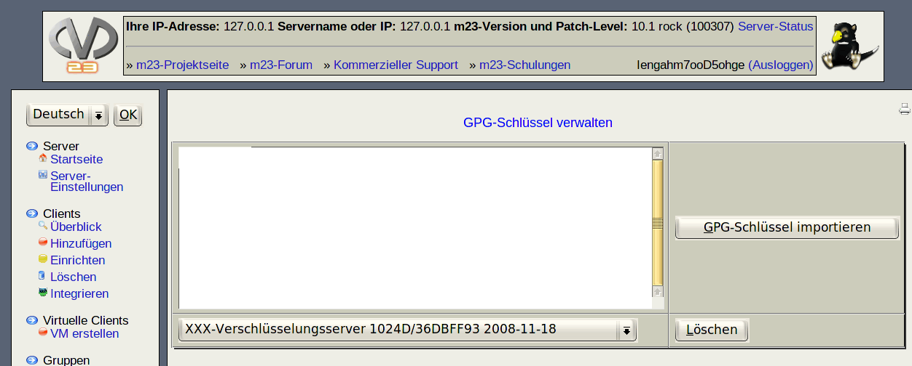

Mit dem Dialog "GPG-Schlüssel verwalten" können Sie neue GPG-Schlüssel zum m23-Server hinzufügen oder existierende löschen.

- Hinzufügen eines neuen Schlüssels:
- Kopieren Sie zuerst den gewünschten GPG/PGP-Schlüssel mittels Ihrer bevorzugten Schlüsselverwaltung in die Zwischenablage.
- Fügen Sie dann den Schlüssel in das Eingabefeld neben "GPG-Schlüssel importieren" ein.
- Klicken Sie anschließend auf "GPG-Schlüssel importieren".
- Löschen eines vorhandenen Schlüssels:
- Wählen Sie aus der Liste den Schlüssel aus, den Sie löschen möchten.
- Klicken Sie anschließend auf "Löschen".
dodger
2012-11-22